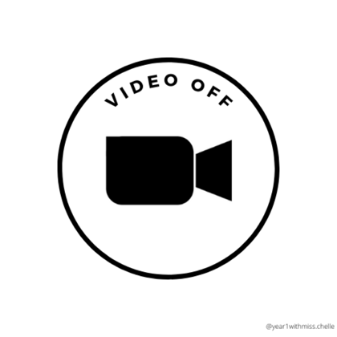
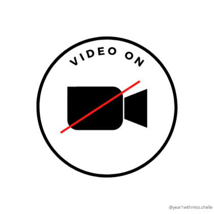
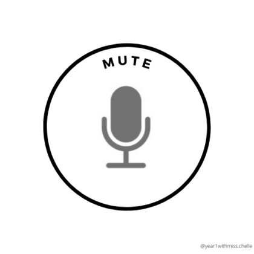
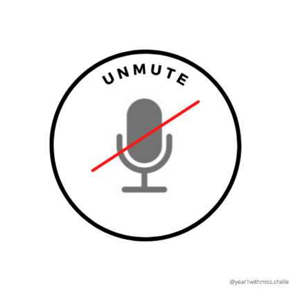
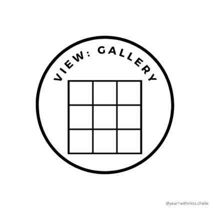
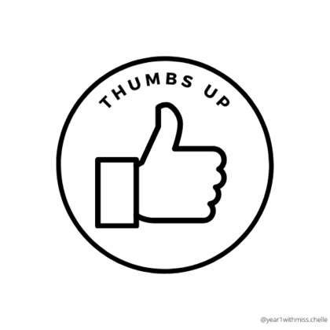
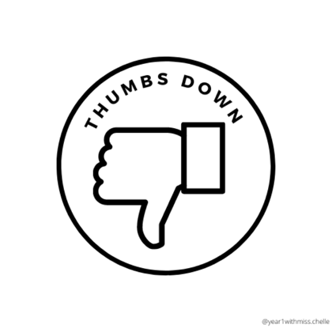
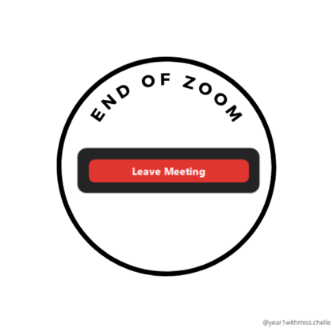

Thrive Academy · Dry run
The first day of class
How we want Day 1 to flow, for K-2, 3-5 and 6-8 classes. The bookshelf on the Live slides is the real one.
The flow
Short teaching, then the check-in
Hellos and Zoom game
10 min
Class agreements
3 min
Into the bookshelf
5 min
Reading check-in
Rest of class
Goodbye
2 min
Teaching takes about 20 minutes. The teacher stays on Zoom the whole time students work.
Before class
Ready before the first student joins
- Zoom link sent to every family
- Student Clever logins ready
- ELA Benchmark window is open in IXL
- Families told: bring headphones
- This presentation open in its own tab
- Class list to check off names
Step 1 · 10 minutes
Hellos and the Zoom game
Teacher
- Greets each student by name
- Goes first: name, grade, one favorite
- Leads “Mrs. _____ Says” with the Zoom buttons
Students
- Share their name, grade and a favorite
- Practice mute, video, reactions and chat
- Learn where every button is
Goal: everyone feels welcome and can use every Zoom button.
Say hello
Tell us about you
Your name
What should we call you?
Your grade
What grade are you in this year?
One favorite
A food, an animal, or something you love to do.
Game time
Mrs. _____ Says!
Like Simon Says, with your Zoom buttons. Only do it when you hear “Mrs. _____ says.”
Your Zoom buttons








Zoom icons: @year1withmiss.chelle
Our class agreements
How we learn together on Zoom
- Muted until it’s my turn
- Camera on, face in view
- Raise my hand to talk
- Kind words in the chat
- A quiet spot to learn
- Ask for help any time
From sign-in to the check-in
- Sign in to Clever. clever.com/login
- On My Day, pick your grade and tap Language Arts.
- Tap the book Core Language Arts. It says Start Here.
- Tap Assignment 2. Grades 6-8: Assignment 1.
- Tap Start my Benchmark, then Yes, start Benchmark.
The bookshelf here is the real one. Anything you click works.
Open in its own tabSee what’s coming, and Math Lessons
- Open any book. Today is the big card.
- Tap Day 2 or Day 3 to look ahead. It shows the assignments and minutes, and says Not today.
- Go back, tap Mathematics, then the math book.
- Day 1: Diagnostic, then Recommendations. Day 2: Recommendations. Day 3: your assigned path.
The Writing book
- Turn to this week, then My Turn to Write.
- The organizer and the writing lines sit side by side.
- Draw, type, or switch line styles from the toolbar.
Your reading check-in
This is not a test you pass or fail.
It helps us see what you already know, so your lessons fit you just right.
While you work
I’m right here with you
Stuck?
Raise your hand or send me a chat.
Need a break?
Stretch, then come right back.
All done?
Send a thumbs up and wait for the teacher.
Great first day
See you next time!
Wave goodbye, then tap the red Leave Meeting button.
One flow, three grade bands
Small changes by age
| Band | Language Arts (Core Language Arts) | Math Lessons | During the day |
|---|---|---|---|
| K | Assignment 1: 15 min · Assignment 2: 25 min | 25 min | A parent helps sign in; break halfway |
| 1-2 | Assignment 1: 20 min · Assignment 2: 20 min | 35 min | A parent helps sign in |
| 3-5 | Assignment 1: 20 min · Assignment 2: 30 min | 50 min | Check in on quiet students |
| 6-8 | Assignment 1 (check-in): 40 min · Assignment 2: 30 min | 60 min | May finish the check-in another day |